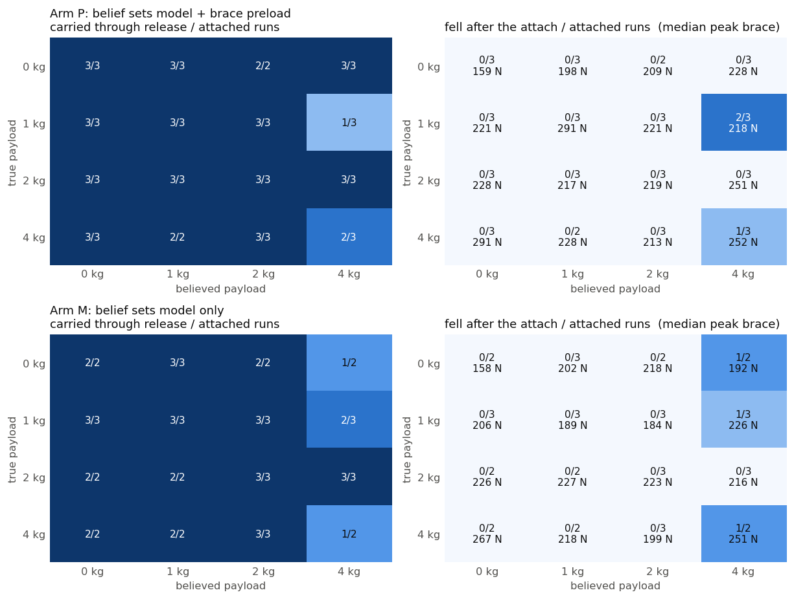

<title>Payload belief on the braced retrieval carry</title>
<link rel="preconnect" href="https://fonts.googleapis.com">
<link rel="stylesheet" href="https://fonts.googleapis.com/css2?family=Source+Serif+4:opsz,wght@8..60,400;8..60,600&family=Source+Sans+3:wght@400;600&family=JetBrains+Mono:wght@400;500&display=swap">
<style>
:root {
  color-scheme: light;
  --bg: #fbfbf9; --ink: #16171a; --ink-2: #4f5359; --muted: #7c8086;
  --rule: #dedfe2; --accent: #2a78d6; --accent-soft: #e8f0fb; --surface-2: #f2f3f1;
  --code-bg: #eff0ee; --warn: #b4560e;
  --serif: "Source Serif 4", Georgia, "Times New Roman", serif;
  --sans: "Source Sans 3", system-ui, -apple-system, "Segoe UI", sans-serif;
  --mono: "JetBrains Mono", ui-monospace, "SF Mono", Menlo, monospace;
}
@media (prefers-color-scheme: dark) {
  :root:not([data-theme="light"]) {
    color-scheme: dark;
    --bg: #17181b; --ink: #ebebe8; --ink-2: #b3b6bb; --muted: #83878d;
    --rule: #34373c; --accent: #3987e5; --accent-soft: #1d2a3d; --surface-2: #202226;
    --code-bg: #202226; --warn: #e08a3c;
  }
}
:root[data-theme="dark"] {
  color-scheme: dark;
  --bg: #17181b; --ink: #ebebe8; --ink-2: #b3b6bb; --muted: #83878d;
  --rule: #34373c; --accent: #3987e5; --accent-soft: #1d2a3d; --surface-2: #202226;
  --code-bg: #202226; --warn: #e08a3c;
}
body { background: var(--bg); color: var(--ink); font-family: var(--sans); font-size: 16px; line-height: 1.55; margin: 0; }
main { max-width: 980px; margin: 0 auto; padding: 40px 24px 96px; }
.text { max-width: 72ch; }
h1 { font-family: var(--serif); font-weight: 600; font-size: 2rem; line-height: 1.2; margin: 0 0 8px; text-wrap: balance; letter-spacing: -0.005em; }
h2 { font-family: var(--serif); font-weight: 600; font-size: 1.35rem; margin: 48px 0 12px; text-wrap: balance; }
h3 { font-family: var(--sans); font-weight: 600; font-size: 1rem; margin: 28px 0 8px; }
p { margin: 0 0 14px; }
.meta { color: var(--ink-2); font-size: 0.92rem; display: flex; flex-wrap: wrap; gap: 6px 22px; margin: 0 0 32px; padding-bottom: 16px; border-bottom: 1px solid var(--rule); }
.meta span b { font-weight: 600; color: var(--ink); }
.eyebrow { font-family: var(--sans); text-transform: uppercase; letter-spacing: 0.08em; font-size: 0.75rem; color: var(--muted); margin: 0 0 6px; }
code, .mono { font-family: var(--mono); font-size: 0.86em; }
code { background: var(--code-bg); padding: 1px 5px; border-radius: 3px; }
pre { background: var(--code-bg); padding: 12px 14px; border-radius: 4px; overflow-x: auto; font-size: 0.82rem; line-height: 1.45; }
pre code { background: none; padding: 0; }
a { color: var(--accent); text-decoration: none; border-bottom: 1px solid color-mix(in srgb, var(--accent) 35%, transparent); }
a:hover, a:focus-visible { border-bottom-color: var(--accent); outline: none; }
a:focus-visible { outline: 2px solid var(--accent); outline-offset: 2px; }
.tablewrap { overflow-x: auto; margin: 12px 0 20px; }
table { border-collapse: collapse; width: 100%; font-size: 0.9rem; font-variant-numeric: tabular-nums; }
th, td { text-align: left; vertical-align: top; padding: 7px 10px; border-bottom: 1px solid var(--rule); }
th { font-weight: 600; color: var(--ink-2); background: var(--surface-2); font-size: 0.84rem; }
td.num, th.num { text-align: right; }
figure { margin: 20px 0 28px; width: 980px; max-width: calc(100vw - 48px); }
figure img { max-width: 100%; height: auto; display: block; border: 1px solid var(--rule); border-radius: 3px; background: #fcfcfb; }
figcaption { font-size: 0.88rem; color: var(--ink-2); margin-top: 8px; max-width: 80ch; }
.finding { border-left: 3px solid var(--accent); padding: 4px 0 4px 16px; margin: 16px 0 20px; background: var(--accent-soft); border-radius: 0 4px 4px 0; }
.finding p:last-child { margin-bottom: 0; }
ol.program { padding-left: 1.4em; }
ol.program li { margin-bottom: 12px; }
ul.todo { padding-left: 1.2em; }
ul.todo li { margin-bottom: 8px; }
.small { font-size: 0.88rem; color: var(--ink-2); }
.kv { display: grid; grid-template-columns: max-content 1fr; gap: 4px 18px; font-size: 0.92rem; margin: 8px 0 16px; }
.kv div:nth-child(odd) { color: var(--muted); }
hr { border: 0; border-top: 1px solid var(--rule); margin: 40px 0; }
@media (prefers-reduced-motion: reduce) { * { scroll-behavior: auto; } }
</style>
<main>
<p class="eyebrow">Experiment page · GOLEM / lean task · 2026-09-14</p>
<h1>Payload belief on the braced retrieval carry</h1>
<div class="meta">
  <span><b>Author</b> Claude Code for W. Xie</span>
  <span><b>Branch</b> <span class="mono">mujoco_mpc @ wxie/brace-payload</span></span>
  <span><b>Code</b> <span class="mono">mujoco_mpc/studies/brace_payload/</span></span>
  <span><b>Page</b> <span class="mono">mujoco_mpc/docs/brace_payload/20260914-brace_payload_belief.html</span></span>
  <span><b>Companion</b> <a href="../wrench_prior/20260914-wrench_prior_direction.html">Wrench prompting as a physical-parameter prior</a></span>
</div>

<div class="text">
<h2>Result</h2>
<p>The H1-2 carries a 4 kg payload back from full reach while braced on the table in every run that believed the payload was 0, 1 or 2 kg (8/8), with the brace taking up to 291 N. It falls backward at the brace release in 6 of 22 runs that believed the payload was 4 kg, on true payloads of 0, 1 and 4 kg alike. Across 86 runs that reached the attach, a belief below the truth never fell (0/31), a correct belief fell twice (2/22, both at 4 kg), and a belief above the truth fell four times (4/33, all with the 4 kg belief). Believing the hand is heavier than it is puts the planned centre of mass behind the heels when the brace comes off; believing it lighter leaves the surplus to the brace and the state feedback, which carry it. Preloading the brace by 2·m̂·g made no difference to the falls.</p>
<p>The same sign came out of the UR5 push study on the companion page and out of the Ramos group's VLM mass estimates (+73%, +77% on two of three objects, arXiv 2508.09846). A calibrated interval from a VLM should be consumed at its low end on this ladder.</p>

<h2>Setup</h2>
<p>Headless <span class="mono">lean_bench</span>, deploy joint gains, iCEM at 33 plans/s (<span class="mono">--spp 15</span>), 6 rollout threads, seeds 0–2 with the 3 mm start perturbation. Strategy slot 11 is a byte-copy of strategy 27 (braced retrieval: approach, hover, descend, grasp, post-grasp, lift-back, retract, tuck, release, four standback rungs, stand) with <span class="mono">timeout_advance</span> on rungs 2–8. That flag is needed because in the bench rung 8 (tuck) misses its 8 cm tolerance, the time-limit path resets the ladder to <span class="mono">stand_up</span> from the braced pose, and the robot falls backward (seed 0, t = 83 s); with the advance the no-payload ladder completes at 114 s. The bench has no gripper joints, so the grasp is the straddle strategy 27 already assumes.</p>
<p>The payload is a point mass on <span class="mono">right_magpie_gripper</span>. The plant gets the true mass at rung 5 (the first rung after the grasp close), ramped over 0.3 s as the object leaves the table; the planner's model gets the believed mass at once. Arm P also adds 2·m̂·g to every brace-force target from rung 5 to 8 (<span class="mono">brace_force_target_add</span>, cleared at release); arm M changes the model only. Grid: true {0, 1, 2, 4} kg × believed {0, 1, 2, 4} kg × 3 seeds × 2 arms = 96 runs, median 199 s each, 2.4 h at two jobs. A run counts as <b>carried</b> if it reached the first standback rung without the pelvis dropping below 0.5 m; four runs reached standback and ran out of the 130 s budget before the final stand, and are counted as carried.</p>
<p>Ten of the 96 runs fell before the payload attached, during the stand or the approach (t = 3–23 s), with the payload code inactive. That is the ladder's own floor at this plan rate and is reported separately; the grid below is over the 86 runs that reached the attach.</p>
</div>

<figure><figcaption>Left: runs carried through the release, per cell, over the runs that reached the attach. Right: runs that fell after the attach, with the median peak brace normal force during the carry. Top: arm P (belief in the model and a 2·m̂·g brace preload); bottom: arm M (belief in the model only). Every post-attach fall is in the believed-4 kg column.</figcaption></figure>

<div class="text">
<h2>What the falls look like</h2>
<p>All six post-attach falls happen 2–10 s into <span class="mono">forearm_brace_release</span>, 24–40 s after the attach. The brace unloads from about 60 N to zero, the torso straightens from about 18° to under 10°, the centre of mass moves from 10 cm behind the foot edge to 20, 30 and then 70 cm behind it within 2–3 s, and the reaching hand swings from x = 0.6 m to −0.1 m as the body goes over backward. In the 4 kg carry with a 0 kg belief the same rung keeps the centre of mass between 0.6 cm behind and 9.5 cm ahead of the foot edge, the tilt under 25° and the brace under 110 N. The planner with 4 kg in its model plans the release for a forward moment at the hand; when that moment is absent, or marginal, the standback that follows is a backward weight transfer starting from too far back.</p>
</div>
<figure><figcaption>Brace normal force, centre of mass beyond the foot edge (negative = behind), and pelvis height from 5 s before the attach. Blue: no payload. Orange: 4 kg carried with a 0 kg belief; the brace peaks near 275 N and the centre of mass stays ahead of the foot edge. Green: 1 kg believed 4 kg, falls at 40 s. Yellow: 4 kg believed 4 kg, falls at 24 s. Both falls go backward as the brace unloads.</figcaption></figure>

<div class="text">
<h2>Numbers</h2>
</div>
<div class="tablewrap"><table>
<tr><th>Pooled over both arms, runs that reached the attach</th><th class="num">fell</th><th class="num">carried</th><th class="num">median peak brace</th></tr>
<tr><td>belief below the truth</td><td class="num">0 / 31</td><td class="num">31 / 31</td><td class="num">217 N</td></tr>
<tr><td>belief equal to the truth</td><td class="num">2 / 22</td><td class="num">20 / 22</td><td class="num">222 N</td></tr>
<tr><td>belief above the truth</td><td class="num">4 / 33</td><td class="num">29 / 33</td><td class="num">215 N</td></tr>
<tr><td>believed 0 kg (any truth)</td><td class="num">0 / 21</td><td class="num">21 / 21</td><td class="num">—</td></tr>
<tr><td>believed 1 kg</td><td class="num">0 / 21</td><td class="num">21 / 21</td><td class="num">—</td></tr>
<tr><td>believed 2 kg</td><td class="num">0 / 22</td><td class="num">22 / 22</td><td class="num">—</td></tr>
<tr><td>believed 4 kg</td><td class="num">6 / 22</td><td class="num">16 / 22</td><td class="num">—</td></tr>
<tr><td>true 4 kg, believed 0 kg</td><td class="num">0 / 5</td><td class="num">5 / 5</td><td class="num">291 N (P), 267 N (M)</td></tr>
<tr><td>true 4 kg, believed 4 kg</td><td class="num">2 / 5</td><td class="num">3 / 5</td><td class="num">252 N (P), 251 N (M)</td></tr>
<tr><td>pre-attach falls (stand / approach, payload code inactive)</td><td class="num">10 / 96</td><td class="num">—</td><td class="num">—</td></tr>
</table></div>
<div class="text">
<p>The preload works as a preload: with nothing in the hand, the median peak brace force during the carry rises 159, 198, 209, 228 N as the belief goes 0, 1, 2, 4 kg in arm P. It changes nothing about the falls (3/12 against 3/10 at the 4 kg belief).</p>

<h2>Bug found on the way</h2>
<p><span class="mono">mj_setConst(model, data)</span> evaluates at qpos0 and leaves <span class="mono">data->qpos</span> there. The <span class="mono">--plant_mass_scale</span> branch of <span class="mono">lean_bench</span> called it on the plant's own data, so every mass-mismatch run before this branch started with the base at x = 0.000 instead of 0.189, the seed perturbation wiped and the object reset to its body position (measured with <span class="mono">--qpos_out</span>: 0.189092 → 0.000000, 0.001534 → −0.000004). qpos0 differs from the <span class="mono">home</span> keyframe in 8 of 41 entries. The kp and friction arms of that ladder do not call it. The mass rows of the planner-ablation page (campaign 17) need a re-run; the fix here is a scratch <span class="mono">mjData</span> (<span class="mono">SetConstScratch</span>), used for the payload attach as well.</p>

<h2>What this does not settle</h2>
<ul class="todo">
<li><b>The mechanism at release.</b> Dump the planner's nominal at entry to rung 9 (<span class="mono">--state_out</span>, the executed pelvis and hip targets over the first second) for a believed-4 run and a believed-0 run on the same true payload. If the believed-4 plan moves the pelvis back faster, the fall is the planned counter-lean; if not, it is the Balance term's edge amplifier on a wrong CoM prediction.</li>
<li><b>Where the cliff is.</b> Believed 3 kg on true 0–4 kg, and true 3 and 6 kg, 6 seeds. The belief band [0, 2 kg] is safe here; the study says nothing about a 3 kg belief.</li>
<li><b>Seeds.</b> Three per cell. The believed-4 column and the 4 kg row need six before either is quoted alone; the pooled rows are what the result rests on.</li>
<li><b>Whether any preload matters.</b> 2·m̂·g did nothing. Try the measured number: set the add so the target during the carry equals the brace the correct-belief 4 kg run actually reached (about 250 N), and a release rung that keeps the brace loaded until the hand is retracted.</li>
<li><b>The ladder's own floor.</b> 10/96 fell before the attach. Six seeds on strategy 11's stand and approach rungs against strategy 25's, same rate and gains, to say whether the floor is the rungs or the rate.</li>
<li><b>The twin.</b> One 1 kg carry on the DDS twin at 33 Hz with the 0 kg belief and one with a 4 kg belief, before any of this is said about the robot.</li>
</ul>

<h2>Files</h2>
<div class="kv">
<div>Study code</div><div class="mono">mujoco_mpc/studies/brace_payload/{sweep.py, analyze.py, README.md}</div>
<div>Bench changes</div><div class="mono">mjpc/lean_bench.cc (--payload_true/--payload_belief/--bft_add, SetConstScratch), lean.cc + Lean_H12_Magpie.xml (brace_force_target_add, brace_force_max numerics), lean.h (slot 11), strategies/h12_brace_payload.json</div>
<div>Results</div><div class="mono">mujoco_mpc/studies/brace_payload/runs/sweep1/{results.jsonl, summary.json, *.csv, *.log}</div>
<div>Figures</div><div class="mono">mujoco_mpc/docs/brace_payload/media/</div>
</div>
</div>
</main>
